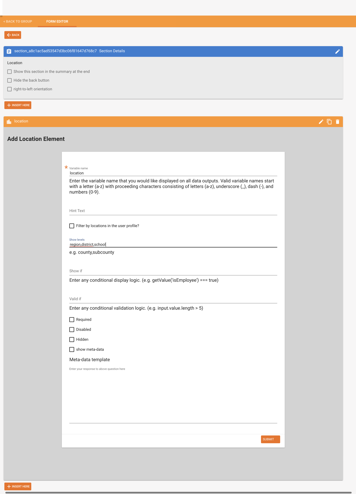
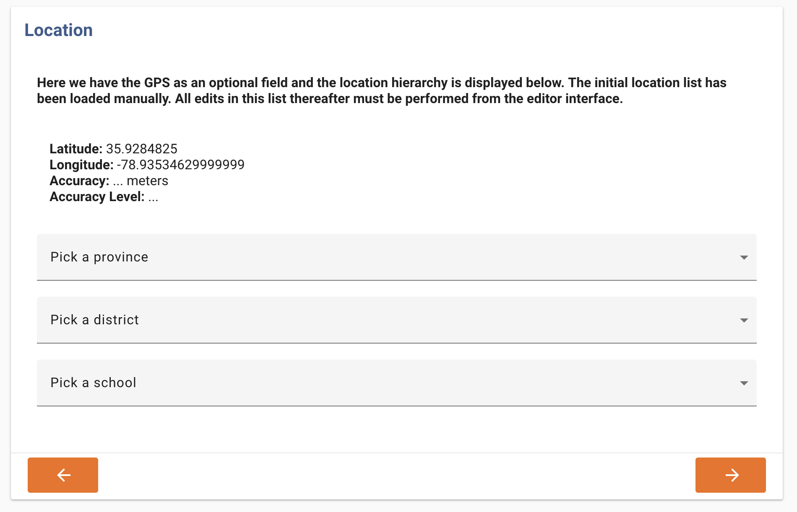
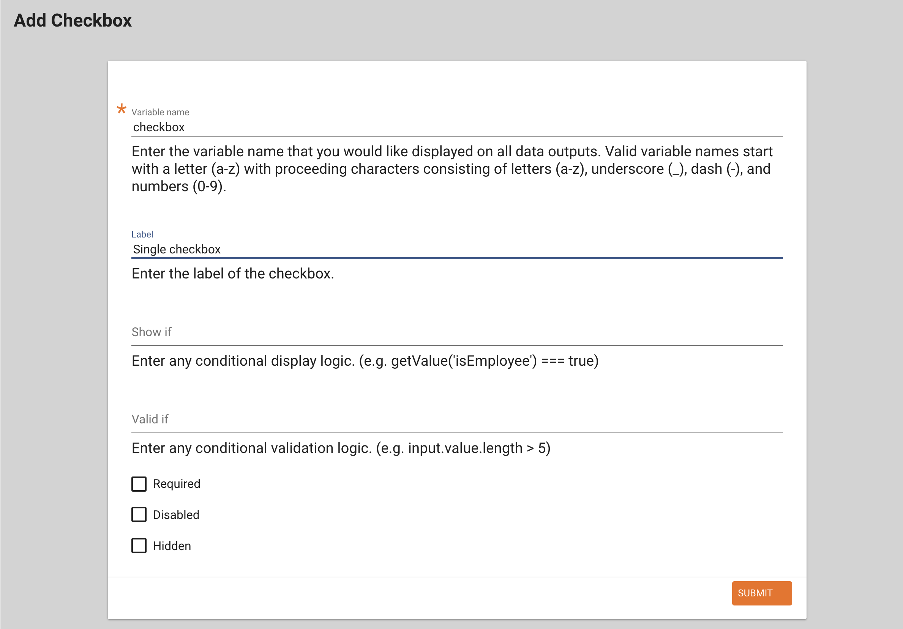
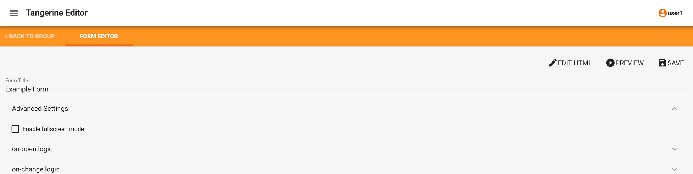
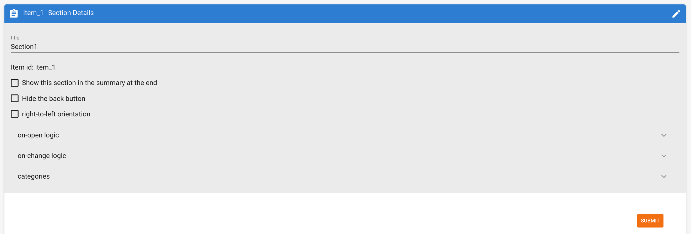
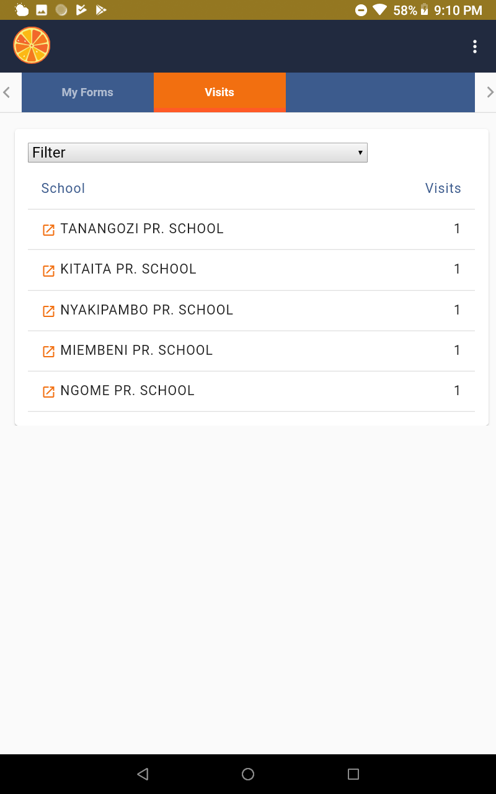
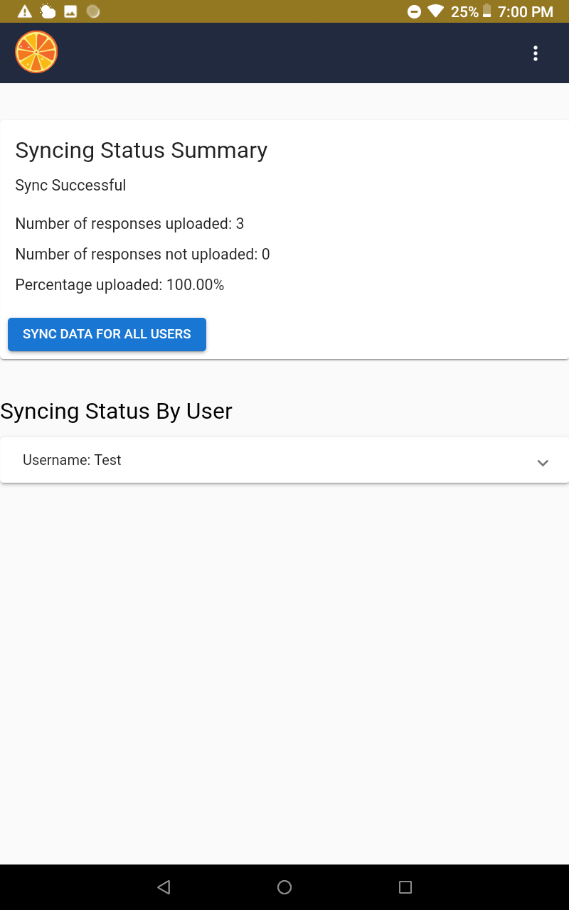

{width=”4.836162510936133in” height=”3.1752580927384075in”}
Creating and Editing Instruments in Tangerine: User Manual
4 Dec 2019
About Tangerine^TM^
Tangerine is open source electronic data collection software designed for use on Android mobile devices. Its primary use is to enable recording of students’ responses in oral early grade reading and mathematics skills assessments. Tangerine is also used to capture interview responses from students, teachers, and principals; as well as in simple surveys and other data collections.
Tangerine was developed by RTI International with funding from RTI and Google.org.
For more information on Tangerine, visit http://www.tangerinecentral.org.
About this Manual
The procedures outlined in this document assume that the user has a valid Tangerine editor username and password and is able to login to their Tangerine instance on the web. If you do not have a Tangerine instance or have any questions about Tangerine, please contact support\@tangerinehelp.zendesk.com.
This manual outlines the critical steps from creating an instrument in Tangerine to downloading the collected data for analysis. It provides tips and recommendations for instrument rendering in Tangerine and software use.
Table of Contents
2. Creating a New Instrument/Form 6
3. Editing Instrument Sections 7
Adding Sections to an Instrument/Form 8
CHECKBOX GROUP (Checkbox, Radio Buttons, or Dropdowns) 18
5. On-Open / On-Change (Skip) Logic Editor 25
Logic at instrument/form level 25
Skip logic with grid specific functions 28
7. The Instrument/Form HTML Editor 31
8. Deploying Tangerine for Offline (or Online) Data Collection 32
10. Using Tangerine on the Mobile Device 37
Adding an auto-generated ID 43
Changing the label of an input 44
Filter the location list based on the user profile’s location 44
How to create new users and add them to a group 47
Location list sample file with IDs 47
Defining a meta data template to present to the user upon selection 47
Add an ‘Other, specify’ field for a location list 47
Generate an Autogenerated ID field 47
Automatically fill in the date and time fields in a section with the current date 48
Add a two variable tablet report 48
Creating a New Group
Upon logging into your Tangerine instance, you will see a screen listing your Tangerine groups and/or the opportunity to create new groups. You might think of groups as discrete data collection efforts that might contain several instruments or forms. If you have, e.g., a baseline data collection and an endline data collection for the same project, you might make these two different groups. When packaging your instruments into the apk (.apk is the application installation file format for Android devices) for installation on an Android device, Tangerine packages all instruments in a group. Thus, you should set up groups and categorize instruments accordingly.
Click “Create New Group” in the screen below.
{width=”1.5853652668416447in” height=”0.5145833333333333in”}{width=”6.263888888888889in” height=”1.9701388888888889in”}
Enter a name for your group: all lower case, no space, only letters.
{width=”6.263888888888889in” height=”2.379861111111111in”}
WARNING: If you are using the free service you are not able to create new groups.
If you are a Tangerine subscriber, the user1 account can be configured to be the only account with permissions to create new groups. If this is desired, please send a request for this configuration to support@tangerinehelp.zendesk.com
Creating a New Instrument/Form
When you create a group, it will show up in the list groups in your Tangerine instance. Click on the group name to start creating your instruments in Tangerine.
When you create a new group, Tangerine automatically creates an example instrument/form. To add a form or instrument, click on the ADD FORM button.
{width=”6.5in” height=”4.054581146106736in”}
This will add an entry to the already existing list of forms but with a default name, ‘New Form’.
You will notice that there is also a User Profile form. This form represents the profile each user has to fill in, after they create their user login details on the tablet. All information that you require in the user profile is attached to each record in the CSV export file. The user profile represents your assessor’s information.
Click the plus icon {width=”0.2378543307086614in” height=”0.24700240594925635in”} to create a new record for the form. This can be used for offline data entry. Be careful as this record is saved in the database even if you do not reach the Submit button.
Click on the pen icon {width=”0.2375in” height=”0.34146325459317584in”}to modify the name of your instrument and to start adding/editing instrument sections and items.
Click on the print icon {width=”0.2554702537182852in” height=”0.36656714785651795in”} to open a new printable menu where you can select two of the print details for each item in your instrument. This is the view we often use to quality assure (QA) the instrument or to get a list of variables and their definition
{width=”0.25972222222222224in” height=”0.2298611111111111in”}
Click on the copy icon to create a copy of the current instrument. You can copy an instrument to a different group or to the current one.
{width=”0.25972222222222224in” height=”0.4097222222222222in”}Click on the trash icon to delete this form.
 {width=”0.25972222222222224in”
height=”0.22036964129483816in”}Click on the archive icon to archive an
assessment. All archived forms are moved to the bottom of the page
{width=”0.25972222222222224in”
height=”0.22036964129483816in”}Click on the archive icon to archive an
assessment. All archived forms are moved to the bottom of the page
{width=”0.23434055118110236in” height=”0.22013888888888888in”}
If a form is archived, click the unarchive button to activate a form. Only active forms are displayed in tablet listing of forms to the assessor.
{width=”0.2798611111111111in” height=”0.3in”}
As you will see later, by clicking from this view, you can also access your data.
To rename your instrument/form, click on the pen icon for the form, overwrite the “New Form” entry under “Form Title” and hit “SAVE”.
{width=”6.5in” height=”1.1611111111111112in”}
Editing Instrument Sections
Once you have selected to edit your new or existing instrument/form, you will see a screen like the one below. This view lists the different sections of your instrument. Each section can contain one or more items.
On the tablet, items in any one section can be seen on a single screen. The user moves through items by “scrolling” down the screen. The user moves through sections by hitting “Next” or “Back” on the tablet.
 {width=”6.5in” height=”1.6465277777777778in”}
{width=”6.5in” height=”1.6465277777777778in”}
The form editor provides the interface for adding and editing instrument sections and items. This interface provides controls that make the following actions possible:
-
EDIT HTML - This converts the interface from a WYSIWYG (“what you see is what you get”) to a HTML code interface
-
PREVIEW – This control enables you to have a preview of your form in the current state
-
SAVE – This control allows you to save the form in its current state
-
ADVANCED – This Control enables you to access the on-open logic and on-change logic. This logic is used for skipping an entire instrument section.
-
ADD SECTION – This allows you to add a section of items to your instrument.
-
EDIT {width=”0.20833333333333334in” height=”0.20238079615048118in”} – This icon opens the interface to edit an instrument section (e.g., add items)
-
DELETE {width=”0.24434820647419073in” height=”0.2519838145231846in”} – This icon deletes this instrument section
In this view, you can drag sections to reorder them.
Adding Sections to an Instrument/Form
To add a new section to your instrument, hit “ADD SECTION”.
{width=”1.107674978127734in” height=”0.39807086614173226in”}
The interface allows a drag-and-drop feature which enables reordering of the sections already created. The order in which the sections are listed, is the same as the sequence of screen that will be shown on the tablet.
Section Editor
Upon adding a new section, or selecting to “EDIT” your instrument section, you will see the section editor screen below.
{width=”6.263888888888889in” height=”2.0in”}
If this is a new section, you might give it a section header. Click the pen icon on the right of the blue bar and overwrite the “…” under “title”. Or any other of the configuration options. Then hit SUBMIT to save your edits.
{width=”6.263888888888889in” height=”2.14375in”}
SECTION OPTIONS
Each one of the sections has a some options that you can control:
Show this section in the summary at the end – mark only if this section is the last one, and if you have coded some summary/feedback otherwise leave unchecked.
Hide the back button – checking this option will remove the Back button from the section when rendered on the tablet.
Hide the next button – hides the Next button on a section. Sometimes advancing the page may depend on the selection of an item, just like it is on some EF inputs. Generally, you keep this unchecked.
right-to-left orientation – switches the position of the Back and Next buttons for RTL languages.
Hide navigation labels – Hides the label from the Back and Next buttons so that it becomes an arrow.
Hide navigation icons – Hides the arrow from the back and Next buttons. If both this and the above are checked you will only see an orange button without labels and text.
Threshold: Number of incorrect answers before disabling remaining questions – This option is used in conjunction with radio button questions only. Set it to the number of consecutive incorrect replies before the test is discontinued. You must mark an option in the radio button group as Correct for this to work. Only one correct option per question can be defined.
{width=”1.0373239282589677in” height=”0.36828083989501315in”}
To add an item to your instrument section, click
This opens the item type selection interface.
{width=”6.263888888888889in” height=”1.4375in”}
These elements are subdivided into groups of item types (e.g., inputs, location, lists, misc):
Inputs
INPUT-DATE: This item type renders a calendar widget on the tablet
{width=”2.0967749343832023in” height=”0.35526793525809275in”}
INPUT-TEXT: This item type is a standard numbers and letters field
{width=”2.013888888888889in” height=”0.4049584426946632in”}
INPUT-TIME: This item type displays a clock hour selection on the tablet
{width=”1.9444444444444444in” height=”0.4132228783902012in”}
INPUT-NUMBER: This item type opens up the number keyboard on the tablet and doesn’t allow any other non-number characters to be inserted here
{width=”2.361111111111111in” height=”0.43801727909011373in”}
Location
GPS: This item type automatically collects GPS coordinates of the tablet
{width=”1.0138888888888888in” height=”0.36363735783027124in”}
LOCATION: The location item type requires a list of locations, e.g. school names by district and region to be imported to the Tangerine editor.
{width=”1.625in” height=”0.4722222222222222in”}
Lists
CHECKBOX: This item type allows for multiple answers to be selected from a list of options
{width=”1.7352241907261592in” height=”0.39645341207349083in”}
CHECKBOX GROUP: Allows for multiple answer options to be selected from a group of options
{width=”2.5in” height=”0.4722222222222222in”}
DROPDOWN (select): This item type allows for a single answer selection for longer lists
{width=”2.7777777777777777in” height=”0.4444444444444444in”}
RADIO BUTTONS: This item type only allows for a single answer selection from a list of answer options
 {width=”2.1805555555555554in”
height=”0.4722222222222222in”}
{width=”2.1805555555555554in”
height=”0.4722222222222222in”}
Misc
IMAGE: the image items allows you to select an image already uploaded by the media library and present it to the user on a particular section
{width=”1.2808989501312336in” height=”0.35810148731408575in”}
SIGNATURE: this input type allows you to capture a signature by the assessor.
{width=”1.441557305336833in” height=”0.36313976377952756in”}
HTML CONTENT CONTAINER: This item type allows for flexible integration of headers, help text, or transition messages that do not require any user input or response.
 {width=”3.361111111111111in”
height=”0.4027777777777778in”}
{width=”3.361111111111111in”
height=”0.4027777777777778in”}
QR CODE SCANNER: This item allows scanning of a QR and Data Matrix codes. Tangerine will capture and save the target info (e.g. URL).
{width=”2.736111111111111in” height=”0.4876038932633421in”}
EF TOUCH: This item type is to assess children’s executive functions, including working memory, inhibitory control, and cognitive flexibility (requires RTI manual support to upload your images and sounds).
{width=”1.7083333333333333in” height=”0.46281058617672793in”}
TIMED GRID: This item type facilitates timed assessment approaches, e.g., to assess letter sound knowledge, oral reading fluency or math operations.
{width=”1.7222222222222223in” height=”0.4722222222222222in”}
UNTIMED GRID: This item type facilitates assessment approaches that are not timed, but require many items, e.g. oral counting, untimed reading comprehension tasks, etc.
{width=”2.2083333333333335in” height=”0.5138888888888888in”}
CONSENT: This item is a special function for participant consent. If the participants responds that no consent is given, the form will be closed and data saved accordingly.
{width=”1.7916666666666667in” height=”0.4722222222222222in”}
Depending on the element chosen, an interface for providing more detail on the item being rendered/created is presented in the Item Editor.
Copying Items
If you have an element and/or content which is the same as a previous element (e.g., radio buttons) that you would like to insert into your instrument quickly, without having to click “INSERT HERE” again, there is a COPY feature that you can use to do this. First, enter your original content (e.g., variable name, labels, and values) and then click SUBMIT. Once the first step is complete, next you click on the {width=”0.34375in” height=”0.28125in”} icon. Doing so automatically creates a duplicate of all your original content, except the variable name, which you will need to edit, if desired. In the image below, you can see that all duplicates are auto-populated with the name “widget,” followed by an underscore, and a mix of letters and numbers (always different from the previous copy). If you would like to, you can edit all the content of the copy to fit your needs.
{width=”6.40625in” height=”2.625in”}
Item Editor
The item editor screen is similar for many of the item types. It usually contains the following elements:
{width=”5.463865923009624in” height=”4.081395450568679in”}
Variable name: This name has to be unique for any instrument/form, as this will be used for the CSV data output as column header with each observation/child assessed/interview being a row. Avoid special characters and spaces, use lowercase only (e.g., “age”).
Label: This will be the item label/name that will be displayed to the user (e.g. “How old are you?”)
Question number: If you input a number in here, you will see that the entire questions is moved to the right and the question number stands out when looking at the page. Use this if you are looking for a visual effect like this.
Hint Text: This field allows you to add text that acts as a hint for the user (e.g., “Enter child’s age or year of birth, if known”)
Show if: This is the place to enter item-level skip logic (see section 5 of this manual).
Required: Selecting this checkbox marks the element as a required field. This ensures that users will enter a value before proceeding to other instrument sections or finalizing the instrument/form.
Disabled: Selecting this checkbox marks the element as inactive. The item is visible to the user on the tablet, but its value cannot be changed.
Hidden: Selecting this checkbox makes the element inactive AND invisible on the tablet.
GPS Item
Use the GPS item to record the location (longitude & latitude) of the user while filling in the instrument/form.
We suggest placing a GPS item always in its own section. Do not combine with other items.
When selecting to add an item of the GPS type, Tangerine presents the below item editor screen.
{width=”6.263888888888889in” height=”5.3902777777777775in”}
The following might be a way to configure this item:
Variable name: Enter “gps”.
Hint Text: Leave blank
Show if: Leave blank
Valid if: Leave blank
Required: Select this checkbox to make this a required field.
Disabled: Leave blank
Hidden: Leave blank
Hit “SUBMIT” to see the below item added to the section editor.
 {width=”6.263888888888889in” height=”0.85in”}
{width=”6.263888888888889in” height=”0.85in”}
On the tablet this item will look like this:
 {width=”6.263888888888889in”
height=”1.3881944444444445in”}
{width=”6.263888888888889in”
height=”1.3881944444444445in”}
LOCATION
This item type offers a dropdown listing of predefined location information such as, e.g., region, district, and school name. Before you add this item to your form, you need to upload a location list and configure Tangerine:
To see a video of how to do this, please go to Appendix B
First, decide what levels you would like to show and prepare a CSV file that contains your locations accordingly. Each column header will present a location level (e.g. column A header might be region; column B header might be district, etc.). Make sure each level/column header contains only a single word and no spaces.
Second, define the location levels for Tangerine. Click on the tab “MANAGE LOCATION LIST LEVELS” located at the top of your group’s main page that lists your instruments/forms.
 {width=”6.263888888888889in”
height=”0.47244094488188976in”}
{width=”6.263888888888889in”
height=”0.47244094488188976in”}
Click “Create a New Location Level”.
{width=”6.5in” height=”1.1538003062117235in”}
On the next screen, enter the name of the “highest” location level under “Label” (e.g. region). Repeat this process for all other location levels, however, for each “child” level, select which is the parent level. E.g. in the case of district, the “Parent Level” would be “region”, and so forth. Hit “Submit” to save.
NOTE: You cannot delete location levels. Be careful and deliberate as you define them for your group. If you made a mistake or need to make changes, contact the Tangerine helpdesk.
{width=”6.5in” height=”2.667465004374453in”}
Next, navigate to the “MANAGE LOCATION LIST CONTENT” tab and select “Import Location List”. Double check that your CSV file contains only those columns that you have defined as levels and spelled exactly the same!
Once you selected the CSV, Tangerine will ask you to map the location levels you already defined to the column headers found in your csv file.
 {width=”6.5in” height=”3.136111111111111in”}
{width=”6.5in” height=”3.136111111111111in”}
Click on the small arrows to select the matching column header. For each ID field, select “Map a column to a level and select “AutoGeneratedID” for the ID as shown in the example below.
 {width=”6.5in” height=”1.2909722222222222in”}
{width=”6.5in” height=”1.2909722222222222in”}
Then click “Process CSV” as shown in the screen above. Once processing is completed, you will receive a notification like this:
{width=”5.0236220472440944in” height=”0.9875492125984252in”}
Once you have successfully uploaded a location list and prepared Tangerine, you can add the location item to your form. The following might be a way to configure this item, once you completed the above steps.
If you think that your location list may change significantly, and you’d like to re-upload it at some point thus not implementing any changes manually, consider adding manual IDs to your location file. In the instruction above, you saw how to add the Autogenerated ID that Tangerine inserts. These IDs, however, are not persisted when you re-upload your location file. In such cases, where you know that you’d rather re-upload the entire file, we recommend that you insert an ID column and you preserve those IDs across versions of your location list. By doing that you ensure that any matching on location IDs (and not on Location labels) will be persisted.
To upload a location file with IDs, first create those IDS in the Excel file. Then, on the Map location field instead of selecting Autogenerated ID, select the column representing the ID for the corresponding level.
WARNING: Upon wiping out the location list when you have not generated the location IDS, all previous results collected will be missing the labels for those location and will contain only the old IDs; all data on the tablets under the Visits tab will show the ID rather than the label. This is why we highly recommend altering the location list manually or maintaining the IDs across different version of the location list in your Excel file.
Check out this Excel file to see a location list with IDs that you can import in Tangerine. The formula for generating the IDs can be copied to your own file: http://bit.ly/2WzcTnB
{width=”4.427083333333333in” height=”4.485416666666667in”}
Variable name: Enter “location”.
Hint Text: Leave blank
Show levels (ex. county,subcounty): Enter “province,district,school”
Show if: Leave blank
Valid if: Leave blank
Required: Select this checkbox to make this a required field.
Disabled: Leave blank
Hidden: Leave blank
Show meta-data: Leave blank
Hit “SUBMIT” to see the below item added to the section editor.
On the tablet this item will look like this:
{width=”4.479166666666667in” height=”0.3850404636920385in”}
{width=”4.479338363954506in” height=”1.624760498687664in”}
NOTE: Without a location list, no location will be displayed, and the item will be seen as “loading”.
CHECKBOX GROUP (Checkbox, Radio Buttons, or Dropdowns)
This item type lets you define a checkbox item that lets a user pick one or more options.
The following might be a way to configure this item:
{width=”3.1875in” height=”3.7354166666666666in”}
Variable name: Enter “books”.
Label: Enter “What kind of books do you like to read?”
Hint Text: Enter “Tick all that apply”
Show if: Leave blank
Valid if: Leave blank
Required: Selecting this checkbox to make this a required field.
Disabled: Leave blank
Hidden: Leave blank
Value (answer option): Enter the data value for the first answer option, e.g., “0”
Label (answer option): Enter the label for the first answer option, e.g., “None”
Hit “ADD ANOTHER” to add additional answer options, e.g.:
Value (answer option): “1”
{width=”3.1798611111111112in” height=”0.9777777777777777in”}Label (answer option): “Storybooks (fiction)”
Hit “ADD ANOTHER” to add additional answer options, e.g.:
Value (answer option): “2”
Label (answer option): “Books about real things (non-fiction)
When done adding all answer options, hit “SUBMIT”.
On the tablet this item will look like this:
{width=”4.908562992125984in” height=”2.1185181539807525in”}
NOTE: The item type “CHECKBOX” only adds a single checkbox to the form, with the item label being the answer option label.
{width=”4.8977012248468945in” height=”3.4148151793525807in”}
On the tablet this single checkbox item will look like this:
 {width=”6.263888888888889in”
height=”0.46729002624671917in”}
{width=”6.263888888888889in”
height=”0.46729002624671917in”}
{width=”6.263514873140857in”
height=”0.3925240594925634in”}
RADIO BUTTONS
Radio buttons are an item type used for items that allow for only one answer. The configuration for radio buttons is the same as for checkbox group with one exception. You will see that radio button options have a checkmark to indicate which answer is correct. This is used in conjunction with the Threshold defined in the section header.
{width=”2.8986111111111112in” height=”2.987800743657043in”}
When you have a threshold defined as 4, and for each question there is only one question option defined as correct, Tangerine will discontinue (hide the questions) after 4 consecutive replies are given as not correct. You can use this in EGMA tasks or in any other scenario where this makes sense
On the tablet the radio button item will look like this:
{width=”6.263888888888889in” height=”1.28125in”}
DROPDOWN
Dropdown is an item type used for items that allow for only one answer to be picked from a dropdown list of items. This item type is convenient when there are many options to choose from. The configuration for a dropdown item is the same as for checkbox group.
On the tablet the dropdown item will look like this:
 {width=”6.263888888888889in”
height=”1.2756944444444445in”}
{width=”6.263888888888889in”
height=”1.2756944444444445in”}
TIMED GRID
This item type facilitates timed assessment approaches, e.g., to assess letter sound knowledge, oral reading fluency or math operations. The following might be a way to configure this item:
Variable name: Enter “letter_sound”.
Number of columns: Enter the number of columns by which you’d like to organize the items. Enter, e.g. “4” (Tip: choose less columns for larger items, like words or operation problems)
Hint Text: Leave blank
Auto Stop: The autostop field defines the number of consecutive incorrect items, starting from the first one, after which the test stops automatically. For example, with an autostop value of 10, if a child has the first 10 items all incorrect, the test will stop. If a child has the first 4 items correct and then the following 10 items incorrect, the test will not autostop.
{width=”4.808333333333334in” height=”5.261805555555555in”}Show if: Leave blank
Valid if: Leave blank
Mark entire rows: This option allows the user to mark and entire row of items as incorrect (e.g. if a child skipped an entire row of sounds in a letter sound assessment)
Required: Selecting this checkbox to make this a required field.
Disabled: Leave blank
Hidden: Leave blank
Duration in seconds: Enter the time allowed to complete this assessment, e.g. “60” for 60 seconds or one minute.
Options (each option separated by a space): Enter all grid items here. Separate each item by a space from the next; if you have extra spaces please remove them!
When done adding all answer options, hit “SUBMIT”.
NOTE: For these kids of assessments there are usually instructions preceding the assessment items. Insert those instructions as a “HTML CONTENT CONTAINER” item first, as shown below, followed by the “TIMED GRID” in the same section. We recommend to only feature the instructions (HTML Content) and Timed Grid in any one section of your instrument/form
On the tablet the timed grid item will look like this:
 {width=”4.25in” height=”3.78125in”}
{width=”4.25in” height=”3.78125in”}
.
HTML CONTENT CONTAINER
This item type allows for flexible integration of headers, help text, or transition messages that do not require any user input or response. You can treat this container as a variable and hide or show different instructional text upon the selection of different options.
The following might be a way to configure this item:
Variable name: Enter “Assessor instructions”.
Show if: Leave blank
Valid if: Leave blank
Mark entire rows: This option allows the user to mark an entire row of items as incorrect (e.g. if a child skipped an entire row of sounds in a letter sound assessment)
Required: Leave blank
Disabled: Leave blank
Hidden: Leave blank
Rows 1-X: Insert assessor instructions, use html tags to insert line breaks or formatting (e.g. \<br> for a line break; \<b>text\</b> for bolding a piece of text, etc.).
When done adding all answer options, hit “SUBMIT”.
{width=”4.5in” height=”4.15in”}
On the tablet this HTML container item will look like this:
{width=”3.5395833333333333in” height=”4.262505468066491in”}
On-Open / On-Change (Skip) Logic Editor
Every instrument/form, section, and individual item provides an interface for adding logic, e.g. skip logic, that controls the interactivity and presentation of the instrument, section, or item.
Logic at instrument/form level
At the instrument/form level, accessing this logic editor is via advanced settings in the section editor.
{width=”6.5in” height=”1.5645833333333334in”}
Click on ADVANCED to see the screen below with “on-open” and “on-change” entries.
{width=”6.263888888888889in” height=”1.58125in”}
Logic at section level
At the section level, the logic editor can be accessed by editing the Section Details clicking the pen icon on the right of the blue bar (where one can also rename the section).
{width=”6.263888888888889in” height=”2.1243055555555554in”}
Logic at item level
As outlined earlier, at the item level, such logic can be added in the “Show if” field in the item editor.
 {width=”6.263888888888889in”
height=”0.9034722222222222in”}
{width=”6.263888888888889in”
height=”0.9034722222222222in”}
On-open and on-change
{width=”5.11in” height=”3.83in”}As the name suggest, on-open logic is only executed when the form is opened whereas on-change logic is always executed whenever a change happens in the whole form. When selecting on-open logic either at the instrument/form level or in the section editor, the following screen appears. The interface allows JavaScript logic to be incorporated into the instrument.
(Skip) Logic Examples
You want to skip an entire section:
Navigate to and select the “on-change” at the instrument/form level. This logic will not work if you insert it in a section (it must be defined on form level)
In this example, the section gets skipped based on responses from a previous item, e.g., if the respondent answered negatively to a previous question “Do you have children?”. Note that the sectionID is provided in Tangerine in the section details as shown below. Form level skip logic is used to present or hide an entire section page to the user. This is very useful when managing a workflow and you need to display some sections but hide others according to the selected option for a question. For example, you can show a certain section only for grade 1 and hide it if grade 2 is selected.
{width=”6.5in” height=”0.7222222222222222in”}
if(getValue('children') == '1')
{sectionEnable('item_1')}
else
{sectionDisable('item_1')}
You want to hide a set of items based on responses to an item in a previous section:
Navigate to and select the “on-open” at the section level.
In this example several items in this section are hidden based on the participant’s response to the item about the child’s schooling experience in a previous section.
if(getValue('school') == '1')
{itemShow('grade')
itemShow(‘repeatedgrade’)
itemShow(‘dropout’)}
else
{itemHide('grade')
itemHide(‘repeatedgrade’)
itemHide(‘dropout’)}
You want to hide a set of items based on responses to two items in a previous section:
Navigate to and select the “on-open” at the section level.
In this example the item “teachers_name” should only be shown if the participant’s previous response to “teacher_available” was yes = 1 AND if the participant’ previous response to “class_selected” was “1”.
if(getValue(' teacher_available') === '1' && getValue('class_selected') === '1' )
{itemShow('teachers_name')}
else
{itemHide('teachers_name')}
The Logic interface offer syntax highlighting. This is handy when you have errors in your code. Below is an example of an error and sample message.
 {width=”6.003898731408574in”
height=”1.0694444444444444in”}
{width=”6.003898731408574in”
height=”1.0694444444444444in”}
You want to skip an item:
Navigate to the “Show if” in the Item Editor.
{width=”6.263888888888889in”
height=”0.9034722222222222in”}
In this example this item (e.g., “Which grade did you repeat?” will ONLY be shown if the response to the previous item (e.g., asking about whether the person ever repeated a grade) was “yes” (data value 1).
getValue('repeatedgrade') == '1'
Alternatively, for a preceding question that had “Other” as an answer option, the logic here might look like this:
getValue('q10') == '9'
Other examples might include a specific value of a preceding item. Use the below example for questions of type checkbox group, where more than one answer can be selected.
getValue('q12').includes('5')
\ NOTE: The skip logic commands used in Tangerine are case-sensitive and space-sensitive. You must type precisely the name of the variables which you want to reference.
NOTE: Use single straight quotation marks to demarcate variables names ', do NOT use single slanted quotation marks ‘ or double quotation marks “.
Skip logic with grid specific functions
You may be in the situation where you are required to perform a skip based on some results from a grid. We provide four functions that you can use in your skip logic to show or hide questions or sections based on the results of a grid.
Showing a question based on the number of attempted items on a grid
If you’d like to hide a question when the number of attempted items on a particular grid is over a certain threshold you can make use of the ‘numberOfItemsAttempted(input)’ function. If your grid variable is ‘letter_sound’ and the question you want to skip is ‘Q_1’ then in the question Q_1 I can insert the below skip logic(under Show If) to show it only when the number of attempted items on the grid is greater than 10
numberOfItemsAttempted(inputs.letter_sound) > 10
Showing a question based on the number of correct items of a grid
Sometimes it may be the case where you want to show a question only if there are a certain N items on the grid answered correctly. In those cases, we make use of the ‘numberOfCorrectItems(input)’ function. If your grid variable is ‘letter_sound’ and the question you want to skip is ‘Q_1’ then in the question Q_1 I can insert the below skip logic(under Show If) to show this question only when the number of correct items on the grid is greater than 0
numberOfCorrectItems(inputs.letter_sound) > 0
Show a question only if the grid did not auto stop
If you have set the autostop value of a grid with variable name ‘letter_sound’ and you want to show a question only when the grid did not discontinue due to a triggered auto stop, then you can insert the below logic into the question’s Show If field:
inputs.letter_sound.gridAutoStopped
The use of the ‘!’ gives us the opposite of the result returned by the function. If the grid stopped the result will be true. When we use the ‘!’ in front of the function, it means that, when the grid did not stop we want a positive answer hence show the question.
Show a question based on the words per minute read on a grid
It may happen that you need to show a question only to advanced students. In those cases, we make use of the function ‘itemsPerMinute(input)’ This function returns the number of items per minute read by the student. We can use it, just as before, in the Show If input field of a question, like so:
itemsPerMinute(inputs.letter_sound) > 35
This call will force a question to be displayed only when the rate of reading was higher than 35 workds per minute.
NOTE: All of the above functions can also be used to show or a hide an entire section page.
Field Validation
Tangerine provides the option to check the validity of an input field. Navigate to the “Valid if” field in the Item Editor.
Field Validation Examples
If, for example, the value entered into an “INPUT-NUMBER” field should have 9 or more characters, enter the following into “Valid if” for this item:
input.value.length > 9
{width=”5.450694444444444in” height=”2.7984667541557307in”}
Tangerine also allow you to compare the value entered in the current item to a value entered for another, earlier item. This might be the case, e.g. for attendance when observing a classroom. That is, when recording attendance, the number of children present should not exceed the number of children enrolled. Assume that a relevant variable name of the earlier item was “boys_enrolled” and the current items is about the boys present, this might be the validation logic to enter under “Valid if” for boys_present.
parseInt(input.value) \<= inputs.boys_enrolled.value
{width=”5.45097987751531in” height=”2.7974037620297465in”}
If you want to validate that a number input is in between a particular range but also allow a ‘No Reply’ answer, use the below validation rule:
input.value >= 0 && input.value \<= 10 || input.value ==999
Here we make sure that the user can only enter numbers between 0 and 10 but also 999 as a reply to this question.
If you have a list of checkboxes with the option No (value 0), NA (value 888), and some other options, and you’d like to make sure that the assessor cannot select the options No or the option NA along with other available options you need to implement a rule like the one below. The variable name in the below example is TQ1
(!getValue('TQ1').includes('888') && !getValue('TQ1').includes('0')) || (getValue('TQ1').includes('888') || getValue('TQ1').includes('0')) && getValue('TQ1').length == 1
The Instrument/Form HTML Editor
The Form HTML Editor provides a high-level interface to the form creation or modification of an entire instrument or form. We suggest avoiding this interface unless familiar with JavaScript, CSS and HTML5. This view allows direct editing of instrument properties for advanced users.
{width=”6.263888888888889in” height=”5.166666666666667in”}
Deploying Tangerine for Offline (or Online) Data Collection
Once the user is done creating the instruments/forms the next step is to deploy the instrument to an Android device for data collection. To release your instruments or instrument updates, select the “Release” tab in the top menu of the main group page.
{width=”6.263888888888889in” height=”2.104861111111111in”}
Upon selecting “Release”, you will see the screen below.
{width=”6.263888888888889in” height=”1.7819444444444446in”}
Tangerine offers two deployment types, test release and live release:
-
Test Release – This release option (“release to QA”) is recommended for testing the instruments. When you make changes and updates to the instruments and release your changes as “Test Release”, tablets that have the “real” version of Tangerine installed will NOT receive this update. HOWEVER, any data synced from the tablet devices even in a “Test Release” deployment goes into the main database (thus mark your tests clearly as “TESTS” to facilitate data cleaning.
-
Live Release – When instruments/forms are final, or instrument edits have been tested, use this release option (“release to production”). In this case, tablets that are already collecting data, or have the group’s apk installed, will received an update request when connecting to the Internet the next time. All data collected from this release will also be added to the main database.
Tangerine also offers two deployment /installation strategies, Android installation or web browser installation:
-
Android Installation. This is the standard deployment package where an actual apk file can be generated on the computer, downloaded, and then copied over to a mobile device via a USB cable and installed. This method of deployment is suitable in slow network environment or when the apk is large.
-
Web Browser Installation. This deployment strategy requires an Internet connection on the tablet for the Tangerine to be installed. Once installed, the app can work again offline. This method is suitable in places of good connectivity.
NOTE: We recommend thoroughly testing your instruments and its data output before releasing them!
Android Installation
This deployment strategy creates an APK file which can be installed on an Android tablet or smartphone. Click on Android Installation Test Release/Live Release as shown in the screen above. Wait.
{width=”6.263888888888889in” height=”0.6847222222222222in”}
Once Tangerine has compiled the apk, click on “Download your APK here”, as shown below. This will download an apk file into your computer’s downloads folder.
{width=”6.263888888888889in” height=”0.508928258967629in”}
NOTE: Every time an instrument/form is changed, added, or deleted from the group, it is necessary to create a release and alert each tablet user to use the “Check for Update” option in order to update their application.
Web Browser Installation
This deployment strategy creates a link/URL to a “progressive web app” (PWA) for direct installation from the web to the Android tablet or smartphone. Click on Web Browser Installation Test Release/Live Release. Wait.
Once Tangerine has compiled the PWA, it will show an installation URL like in the screen below.
{width=”6.263888888888889in” height=”0.7569444444444444in”}
Use this URL from the Chrome browser on the tablet to install the PWA on the tablet devices.
You can also copy the URL and open a new browser tab with this URL on your computer to test your instruments online. The browser window may require you to confirm that you want to apply the updates.
{width=”6.263888888888889in” height=”2.9854166666666666in”}
After “Click here to proceed”, Tangerine will show an online data collection version of your instruments with a similar look and function as on a tablet/smartphone.
{width=”6.263888888888889in” height=”2.165277777777778in”}
{width=”3.8993055555555554in” height=”2.464583333333333in”}
NOTE: Every time an instrument/form is changed, added, or deleted from the group, it is necessary to release the apk/pwa again, but NO NEW INSTALLATION is necessary on the tablets. Instead, instruct Tangerine tablet users to connect their tablets, select their profile page (3 vertical white dots on top right of tablet screen).
Select “Check for Update” and proceed to install the update.
 {width=”2.0555555555555554in”
height=”2.4929571303587053in”}
{width=”2.0555555555555554in”
height=”2.4929571303587053in”}
NOTE: This update approach will not only apply any instrument/form edits, new forms, or form deletions, but also any updates to the Tangerine application made in the meantime and applied to your group (if any).
Download CSV
As mentioned earlier, on the group’s main page listing the instruments/forms for the group, Tangerine provides a download CSV function on the main Tangerine editor page.
{width=”6.263888888888889in” height=”2.047222222222222in”}
Click the download icon
 {width=”0.20402340332458443in”
height=”0.21039916885389326in”}to see the interface below. From here,
you can select the results for a specific month or year of data
collection.
{width=”0.20402340332458443in”
height=”0.21039916885389326in”}to see the interface below. From here,
you can select the results for a specific month or year of data
collection.
{width=”6.263888888888889in” height=”1.8118055555555554in”}
NOTE: To be able to download all the data select the * on both Month and Year and click the SUBMIT button.
If the CSV generation was successful, the following screen will present the group name, Form id , Start time and progress of the CSV download.
{width=”6.263888888888889in” height=”1.2673611111111112in”}
Once the CSV has been created, you can find it in your Downloads folder.
10. Using Tangerine on the Mobile Device
{width=”2.6166666666666667in” height=”4.18125in”}When using “Android Installation”, install the Tangerine apk upon moving it onto the tablet device. Make sure you have selected “Unknown sources” under Settings > Security to allow installation of apps from sources other than the Play Store.
When using the “Web Browser Installation” strategy, enter the PWA URL generated above into the URL field of the Chrome browser. Upon start of the download process, you will be prompted about “Adding Tangerine to Home screen”. Confirm this with “ADD” on the next prompt.
Close your browser and open Tangerine from your device’s home screen or app drawer. Do not use the browser link anymore.
Registration and Log in
Have users register on the tablet. This is only required once for each user on a given tablet.
{width=”2.1790551181102362in” height=”3.486487314085739in”}
Log in following registration.
{width=”2.9004844706911634in” height=”2.5479451006124236in”}
You should now see the main Tangerine screen with your group’s instrument listed on the tablet.
{width=”2.6273687664041994in” height=”4.203790463692038in”}
NOTE: Hitting the tangerine icon in the top left corner will return the user to Tangerine’s home screen.
Administrating Instruments
Select the instrument to use, and follow the prompts, sections, and items on the screen, as generated in the instrument/form editor. To select an answer option, just tab on it.
NOTE: Different to all other inputs, where the user/assessor selects the applicable / correct response which will then be marked in blue, in grids, the user has to select all INCORRECT items (they will turn blue).
{width=”2.9583333333333335in” height=”4.739583333333333in”}{width=”2.96in” height=”4.74in”}
Resuming Instrument
Should an administration be interrupted, or to be completed at a later stage, navigate to “Visits” on the top of the tablet screen.
NOTE: You have to have a location section and location list loaded for your instrument to be able to access the resume feature in Tangerine. Make up a location list, even if it only has one column header entry and one item underneath (e.g. column A header is “site”, row 2 entry is “test site”. Without a location list loaded, you will not have a “Visits” tab on the tablet from which to resume the instrument.
{width=”3.451388888888889in” height=”3.0454549431321083in”}
Select the appropriate location and date (as applicable) from the menu. Tangerine will automatically return the user to the last, incomplete section/page of the instrument.
{width=”3.475693350831146in” height=”1.9696970691163604in”}
You can return from the “Visits” page to the main screen by hitting the Tangerine icon.
{width=”2.0590277777777777in” height=”2.2743055555555554in”}Syncing Data
Whenever possible during data collection, recommend that users / assessors to sync their data to the tablet by navigating to the profile menu, and select “Sync”.
The Sync screen provides an overview of the data upload/sync status to date, including the number of responses not yet uploaded as shown below.
 {width=”3.518662510936133in”
height=”3.1515146544181976in”}
{width=”3.518662510936133in”
height=”3.1515146544181976in”}
Once the sync is complete, Tangerine will show “100%” for the field “Percentage uploaded”.
{width=”3.45in” height=”3.1515146544181976in”}
Appendix A
In this appendix we will show you how to do certain things that require more technical knowledge or experience with Tangerine
Adding an auto-generated ID
An autogenerated student or teacher ID is something that you may need to add to each one of your instruments. In the example here I will show you how to add an ID field that is already populated upon opening the page. Here are the steps to set this up:
-
Create an input field of type TEXT and type in ‘student_id’ as its name. Mark this field as required and click save.
-
Copy and paste the code that I have before into the on-open section logic
Go the section where you’d like to add a student id. This new field doesn’t have to be in a separate section and can be part of the Student Information page.
Click the Insert Here button, to add a new input, and select TEXT under the first Inputs column.
On the next page under name type in student_id
{width=”4.9875in” height=”2.281674321959755in”}
Add a label and any other information you’d like for this field and save it.
Now click the Edit icon on the top left of the section header
Click the ‘on-open’ text link to edit it and paste the below code inside the field:
function makeid() {
var text = '';
var possible = 'ABCDEFGHIJKLMNPQRSTUVWXYZabcdefghijklmnpqrstuvwxyz0123456789';
//change 6 to the desired length of the ID
for (var i = 0; i \<= 6; i++)
text += possible.charAt(Math.floor(Math.random() * possible.length));
return text;
}
//If your variable is not called student_id change it in both occurances below
if (inputs.student_id.value == '')
inputs.student_id.value = makeid()
You should see something like this on your screens
{width=”6.089588801399825in” height=”3.05in”}
Click the Submit button to save the change. If you deploy this form now you will see that upon opening this section the ID is generated and already inserted into the student_id variable.
You can use this file to help you generated the code that you need: http://bit.ly/2JBk2P3
Changing the label of an input
In some situations, you may wish to change the label of an input as to give different instruction or to add a variable name to it (like some calculation or the result of a previous selection). You can easily do this by following the below steps
-
Add the question that you wish to change
-
Add code and/or calculations to change the label in the on-open event of a section
Let’s first add question with variable name Q_10. Now, let’s assume that you want to change the label for this question based on some calculation, and we want to add the result of the calculation to the label. Go to the on-open event on the section containing Q_10. Add the below code and click Submit:
var calc = getValue('teachers_present')/getValue('teachers_enrolled')
inputs.Q_10.label = 'The teacher ratio is#' + calc + ' Please keep this in mind when answering the below question.'
What am I doing above? First I calculate some ration of teachers present vs teacher enrolled, which I’ve collected on a previous form. Then I make this ratio part of the label for questions Q_10.
If you’d like to only assign a certain label without calculating anything you can do this:
inputs.Q_10.label = 'Previously you responded that there are #' + getValue('teachers_present') + ' teachers present. How many of them were prepared for class?'
Filter the location list based on the user profile’s location
Let’s assume that you have a location list with levels Region, District, and School. Now let’s also assume that on the user profile page, you have added a location input with levels Region and District. You have also asked each assessor to select their district on the user profile page, after they have logged in.
Your user profile page looks like so:
{width=”4.0625in” height=”3.3806419510061243in”}
Note above how the levels defined for this location input are Region and District. On the actual assessment form your location levels include the full hierarchy, for example, Region, District, and School. There is one more option that I want to check here which is “Filter by locations in the user profile” In the assessment form make sure that your data is like the example below:
{width=”4.071112204724409in” height=”1.8368339895013124in”}
What will enabling the filter on the assessment form do? It will display only the district that this user has selected under their user profile. This makes the selection of a school much easier in a list with a lot of regions and districts. Let’s see how it works on the tablet.
When filling in my user profile I will select the ‘Kilolo DC’ district
{width=”3.4875in” height=”4.340765529308836in”}
Now every time start a form containing a location input in it, I will only see the district that I selected on the user profile and no other regions or districts will be given to me for selection. By doing this, you ensure that the assessor will never select a school with the same name form a different district or make a selection that doesn’t correspond to their actual location.
{width=”5.2in” height=”1.9103783902012248in”}
Note how in the above screenshot, there is only one district showing up. Under the region selection we also see only the region that the Kilolo DC district belongs to.
Appendix B
In this appendix we will link some video tutorials and helper files that you can use to have a live example on how to do certain things with Tangerine
How to create new users and add them to a group
See how to create a user and add them to a group.
Importing a location list
Make sure that the column names in your Excel exactly match the levels define in Tangerine (Including any capital letters)
The part about importing metadata for your location is optional. You do not have to define metadata if such is not used in your scenario
Location list sample file with IDs
In this file you will find out a sample location list with the IDs generated by Excel. You can use the formula for generating the Ids if your file does not contain such.
Defining a meta data template to present to the user upon selection
If you do decide to use metadata, you need the part below in order to display some/all of it to the data assessor. If you are not displaying this information to the tablet user it will still end up in your CSV file.
Adapt the line below to fit yoru metadata and level information so that this is printed to the assessor
\${node.level === 'LEVEL_VARIABLE' ?` EMIS: \${node.META_DATA_VARIABLE}`:''}
Replace the bold text with your corresponding level and meta data variable. Make sure you enable the metadata for the location input and paste this code as content.
Add an ‘Other, specify’ field for a location list
In this video we show you how you can add an ‘Other’ field for a location list. To help you generate the code we also use another helper file for this.
The helper file to generate the necessary code is located at http://bit.ly/2DLy3Xa
Generate an Autogenerated ID field
This helper file will help you generated the code for your autogenerated ID
Automatically fill in the date and time fields in a section with the current date
This helper file will help you generate the code required to automatically fill in the date and time fields located in the same section with the current date and time on the tablet. Hint: to prevent the user from changing these values you can mark the inputs as Disabled
Add a two variable tablet report
You can make use of the helper file located at http://bit.ly/2Yi8PsF to generate the code for a two variable tablet report like in the image below. This report shows you the count of occurrence of the two variables per day
Refer to the instructional video at https://youtu.be/ne5pZkWvjKY
{width=”5.810126859142607in” height=”2.8633639545056866in”}